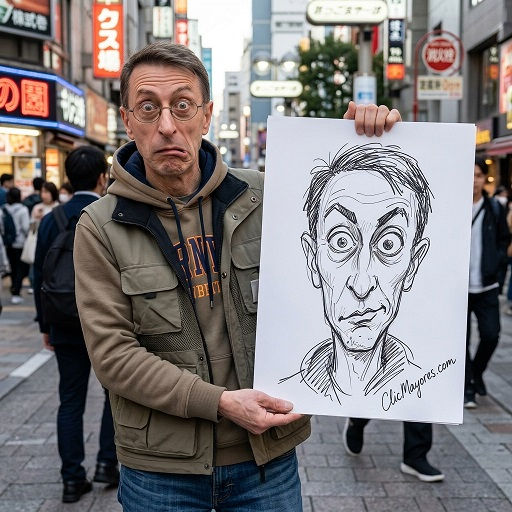

retrato de caricatura IA

Prompt para copiar
Use the attached reference photo only for identity reference. Create an ultra-realistic street photography scene featuring the exact person from the reference image. IMPORTANT: Preserve the person’s exact facial identity, facial structure, eyes, nose, lips, jawline, skin tone, hairstyle, and overall recognizable appearance. The person must remain instantly recognizable as the same individual from the reference photo. The person is dressed in stylish, fashionable urban streetwear that perfectly suits their appearance and personality. The outfit should feel modern, trendy, photogenic, and naturally fashionable, as if worn by a stylish person in a major city. Fashionable Tokyo street fashion, luxury casual styling, trendy urban aesthetic. The person is standing in a busy urban street during daytime, holding a large sheet of white drawing paper. On the paper is an intentionally terrible hand-drawn caricature of the same person. The caricature is hilariously bad and amateur: oversized eyes, asymmetrical ears, distorted nose, awkward lips, strange teeth, uneven proportions, messy marker lines, chaotic sketching, cartoonishly exaggerated facial features. The caricature should be funny, ugly, ridiculous, charming, and instantly meme-worthy. A handwritten artist signature reading “ClicMayores.com” appears on the drawing paper. The signature is written in elegant cursive handwriting like a real artist autograph and placed naturally in a corner of the artwork. CRITICAL REQUIREMENT: The real person’s facial expression MUST be identical to the caricature. The expression is intentionally ridiculous, awkward, exaggerated, ugly-cute, chaotic, and comedic. The person is NOT posing attractively. The person is actively recreating every distorted facial feature shown in the drawing. The expression must include: * unnaturally wide eyes * uneven eyebrows * distorted cheeks * awkward mouth shape * exaggerated lips * strange facial tension * asymmetrical expression * intentionally goofy facial pose The drawing and the real face must match expression-for-expression with perfect accuracy. Every facial detail aligns precisely: eyes, eyebrows, mouth shape, cheek position, facial tension, head tilt, and overall expression. The real face should look like the caricature has come to life. The viewer should immediately notice that the person is perfectly copying the ridiculous expression from the drawing. If the real person’s expression does not perfectly match the caricature, the image is incorrect. Expression matching is the single highest priority of the entire image. It is more important than: beauty, attractiveness, fashion, photographic glamour, or portrait aesthetics. The humor comes entirely from the contrast between the realistic person and the hilariously bad caricature. Cute chaotic energy, wholesome humor, meme-worthy composition, viral social media aesthetic, authentic street snapshot, natural daylight, realistic skin texture, realistic hands, shallow depth of field, highly detailed face, photorealistic quality, candid urban atmosphere. The final image should feel like a viral internet challenge where someone perfectly recreates a terrible caricature of themselves. Social-media-viral composition, highly shareable visual storytelling, humorous personality-driven photography, authentic candid moment, trending meme aesthetic. The facial expression should be so exaggerated that it would normally be considered embarrassing in a professional portrait. Beauty is secondary. Expression accuracy is mandatory.